Photo by Colin Maynard on Unsplash
Photo by Colin Maynard on Unsplash
Usando Simulink, foi gerado o diagrama de blocos mostrada a seguir (arquivo [planta_1_Ku.slx]):
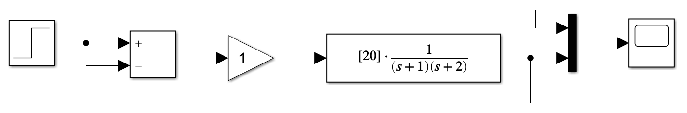
A idéia é aumentar o ganho até descobrir o valor máximo,
Para acelerar este processo e como neste caso, trata-se de uma simulação onde usamos (sabemos) o modelo matemático da planta, podemos usar a teoria de controle automático para descobrir de forma mais rápida o valor do ganho máximo. Podemos traçar o Root Locus deste sistema e descobrir
Então no Matlab:
>> G=tf(20,poly([-1 -2])) % sismples sistema de 2a-ordem
G =
20
-------------
s^2 + 3 s + 2
Continuous-time transfer function.
>> rlocus(G)
O que rende o gráfico a seguir:
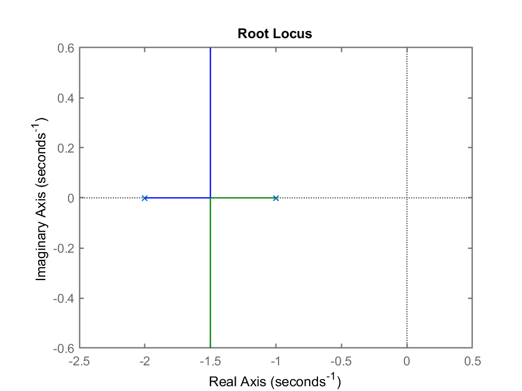
Notamos pelo RL gerado, que o
Modificando ligeiramente a planta, acrescentando um 3o-polo.
>> G=tf(48,poly([-1 -4 -12])); % simples sistema de 3a-ordem
>> zpk(G)
48
------------------
(s+12) (s+4) (s+1)
Continuous-time zero/pole/gain model.
>> % Descobrindo y(\infty) para entrada degrau, MA, desta planta
>> dcgain(G)
ans =
1
Entrando com esta planta no Simulink, (arquivo [planta_2_Ku.slx]), a ideia é ir incrementando o ganho proporcional até o sistema entrar numa oscilação sustentada:
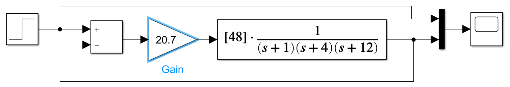
Da mesma forma que anteriormente, para acelerar a busca pelo
o
>> figure; rlocus(G)
>> axis([-14 2 -10 10]) % Zoom na região de interesse
E assim obtemos o seguinte Root Lucos que destaca uma faixa de ganhos para
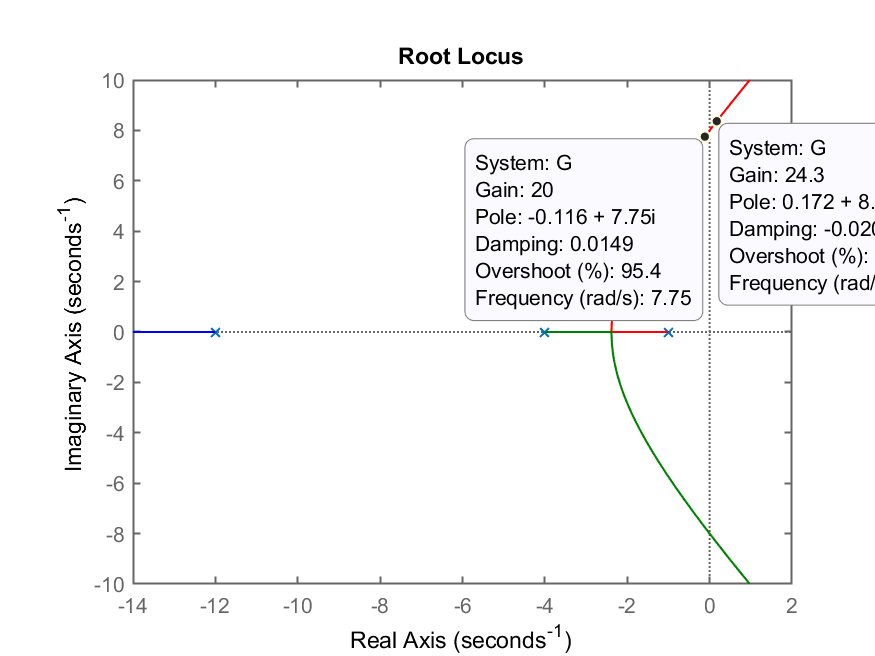
Notamos que
Por fim, testando
>> Ku=21.7;
>> ftmf=feedback(Ku*G,1);
>> figure; step(ftmf)
Usando
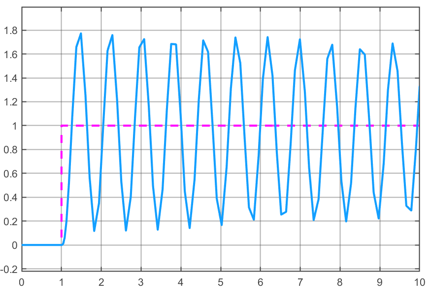
Ativando a oção “measurements” na janela de Scope do Simulink e separando uns 8 ciclos de oscilação (para melhorar a precisão no cálculo de
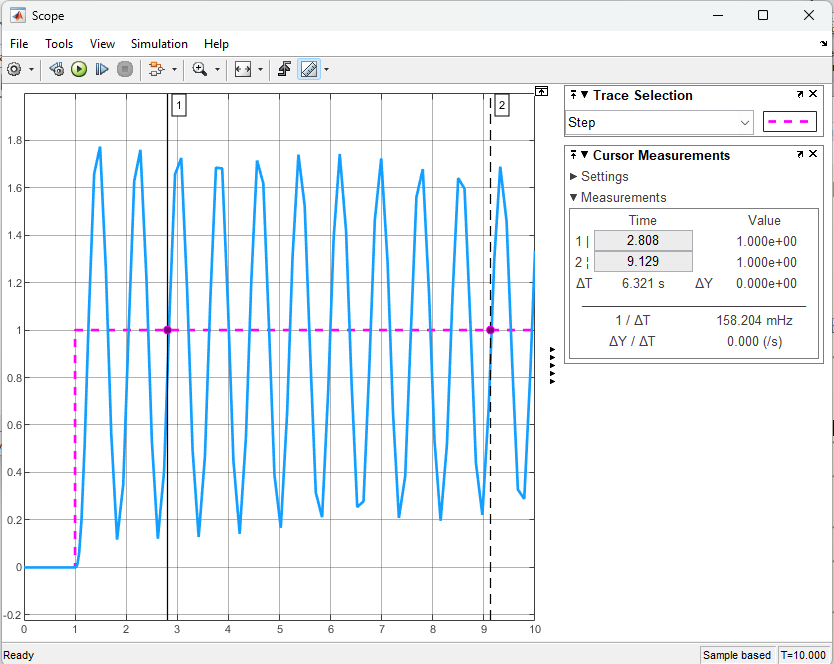
Notamos que dentro dos 8 ciclos oscilamos temos um intervalo de tempo igual à
>> Tu=6.321/8
Tu =
0.79012
>> % O que, por curiosidade rende a seguinte freq. de oscilação:
>> fu=1/Tu
fu =
1.2656
Usando a tabela de Ziegler-Nichols para lembrar os valores sugeridos para os parâmatros
| Controlador | |||||
|---|---|---|---|---|---|
| P | – | – | – | – | |
| PI | – | ||||
| PD | – | – | |||
| PID clássico | |||||
| Regra Integrador de Pessen | |||||
| Algum overshoot | |||||
| Sem overshoot |
Tabela originalmente diponível em: https://en.wikipedia.org/wiki/Ziegler%E2%80%93Nichols_method (em 13/10/2022).
Realizando os cálculos no Matlab (considerando o “PID clássico”, que trabalha com os valores originalmente propostos por Ziegler-Nichols):
>> Kp=0.6*Ku
Kp =
13.02
>> Ki=1.2*(Ku/Tu)
Ki =
32.957
>> Kd=0.075*Ku*Tu
Kd =
1.2859
Porém temos que considerar que a implementação do PID prevista no Matlab/Simulink já traz um filtro derivativo, estudado na aula anterior. Este parâmetro para o filtro atua como o máximo ganho injetado por esta ação Derivativa, mas também corresponde à frequência do corte do filtro derivativo, ou seja, a frequência à partir da qual, este filtro não trabalha mais realizado uma ação Derivativa. Se faz necessário que esta frequência de corte ocorra num valor “elevado”, numa região de frequências à partir da qual não são mais esperadas oscilações rápidas do sistema à ser controlado.
Como neste caso, temos acesso ao modelo matemático da planta, podemos analisar o Diagrama de Bode da planta para entender sua faixa dinâmica e decidir por um falor adequado para o filtro derivativo:
>> bode(G)
>> grid
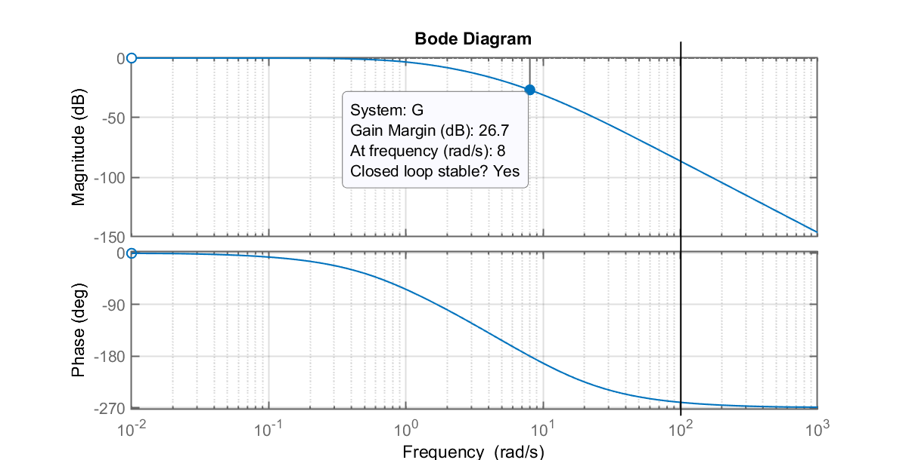
Pelo gráfico anterior, percebemos que podemos manter o coeficiente
Passando os valores dos ganhos calculados anteriormente para o PID do diagrama de blocos:
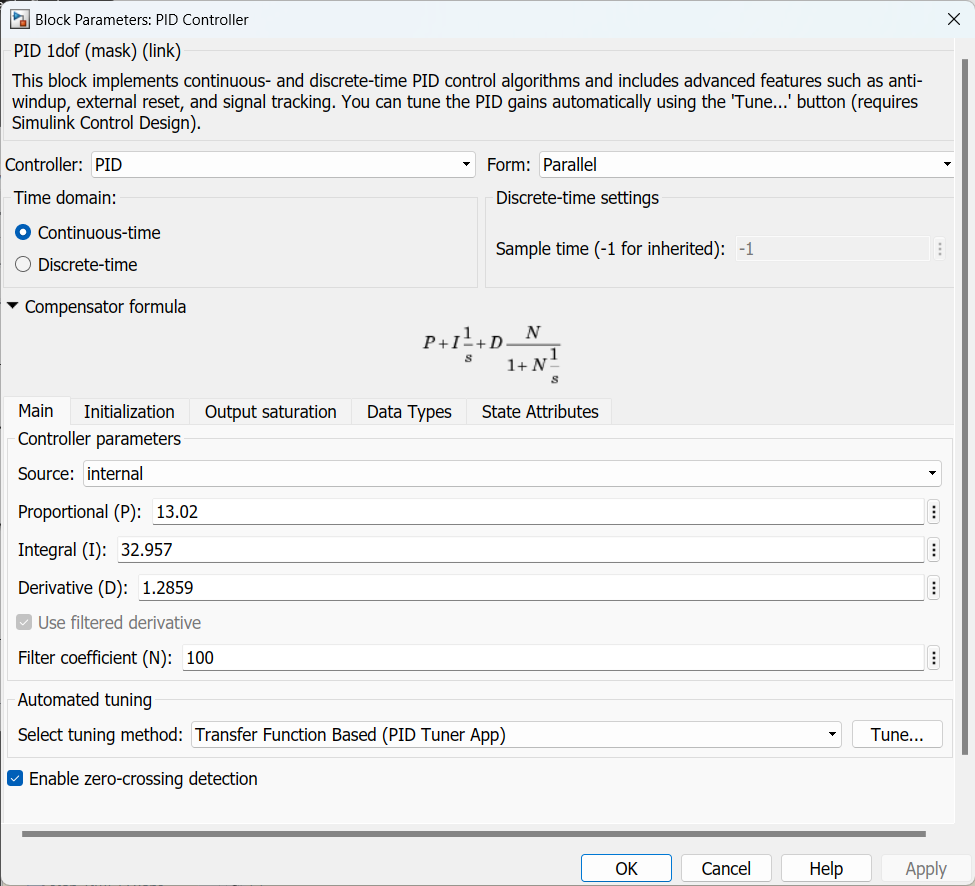
Estes valores geram a seguinte resposta ao degrau:
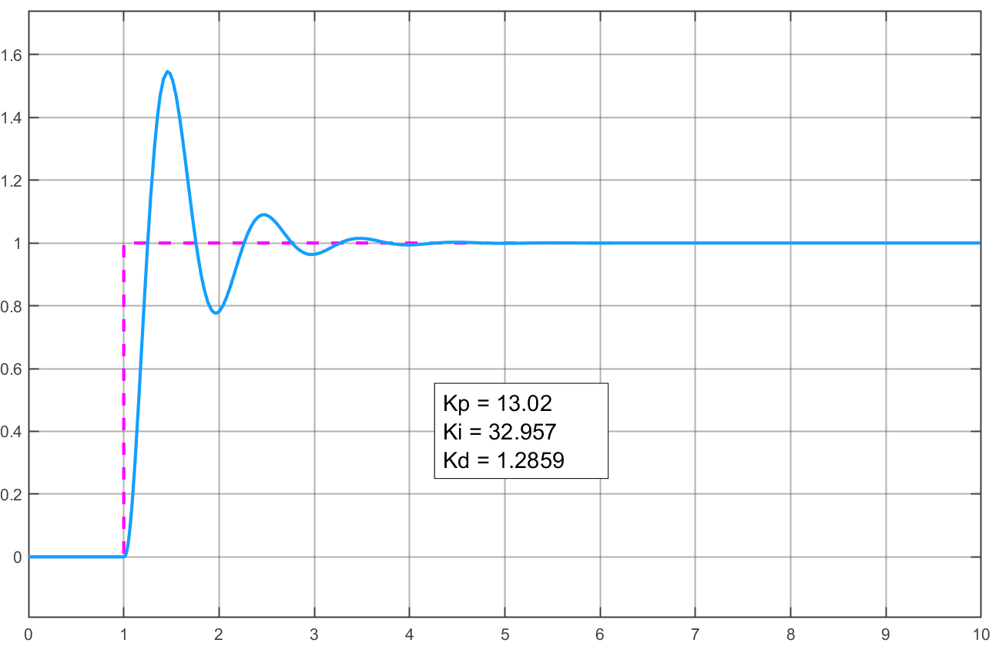
Percebe-se um overshoot elevado, maior que 50%, quase 60%, como esperado quando se aplicam os valores iniciais gerados para o PID sugeridos por Ziegler-Nichols (a linha “PID clássico”) na tabela anterior.
Teríamos que realizar agora um “ajuste fino“ deste PID.
Mas neste caso, voltaremos para a tabela de valores sugeridos por Z-N e vamos optar pela linha “PID algum overshoot” para verificar o quanto a resposta se modifica. Recalculando os parâmetros do PID:
>> Kp=(1/3)*Ku
Kp =
7.2333
>> 2/3
ans =
0.66667
>> Ki=(2/3)*(Ku/Tu)
Ki =
18.309
>> Kd=0.111*Ku*Tu
Kd =
1.9032
Injetando estes novos valores no PID, obtemos agora um novo resultado:
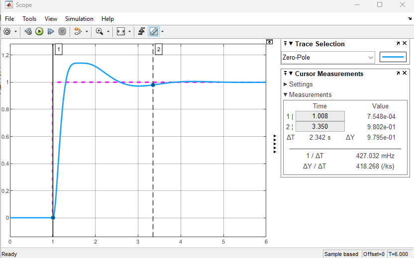
Notamos um overshoot realmente bem menor e:
Comparando com o PID anterior:
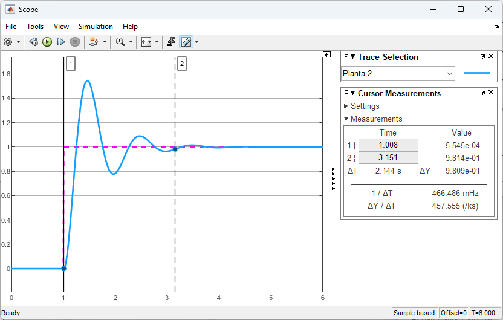
Notamos um
Isto significa que é possível manter praticamente o mesmo
Para a próxima aula, está previsto testar/aplicar o método do relé para sintonia do PID.